趣链区块链浏览器¶
1. 功能概述¶
趣链区块链浏览器是管理人员可视化管理hyperchain相关链上业务的可视化工具，支持查看区块链上信息、节点/合约实例可视化管理等核心操作。
本使用手册将从启动趣链区块链浏览器、查看区块链浏览器、节点管理、合约实例管理等方面展开介绍。
2. 使用说明¶
2.1 快速启动¶
2.1.1 配置说明¶
使用区块链浏览器功能需要在hyperchain启动之前进行相关配置。主要配置项如下:
system.toml
[baas] enable = true
在system.toml配置文件下，将bass.enable配置设置为true
dynamic.toml
[port] ...... baas = 12001
在dynamic.toml配置文件下，配置baas的访问端口，默认为12001。即在hyperchain启动成功后，可以在浏览器访问 ip:12001 来打开区块链浏览器。
证书配置
趣链区块链浏览器通过sdk访问节点，故需要在节点的baas/conf目录下配置相关证书。
需要配置的证书及目录结构如下:
conf
├── certs
│ ├── sdkcert.cert
│ ├── sdkcert.priv
│ ├── unique.priv
│ └── unique.pub
│ ├── tls
│ │ ├── tls_peer.cert
│ │ ├── tls_peer.priv
│ │ └── tlsca.ca
注意，证书的配置取决于链上相关证书是否开启。
2.1.2 启动趣链区块链浏览器¶
您在部署hyperchain后，可获取目标节点的IP和端口信息（具体方式参见hyperchain部署手册），在相同域下的电脑设备内打开网页浏览器，在地址栏中输入对应的IP和端口，即可进入对应节点的趣链区块链浏览器。
示例：
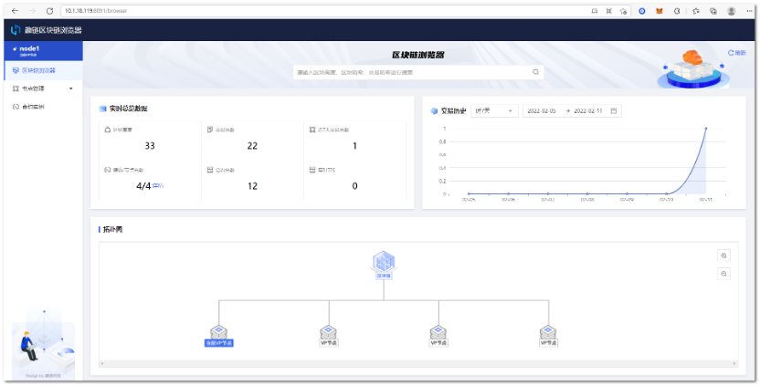
2.2 区块链浏览器¶
区块链浏览器页面内，支持查看 实时总览数据 和 网络拓扑图 ，更进一步地，您可以从“区块”、“交易”两个维度进一步查看区块链数据。
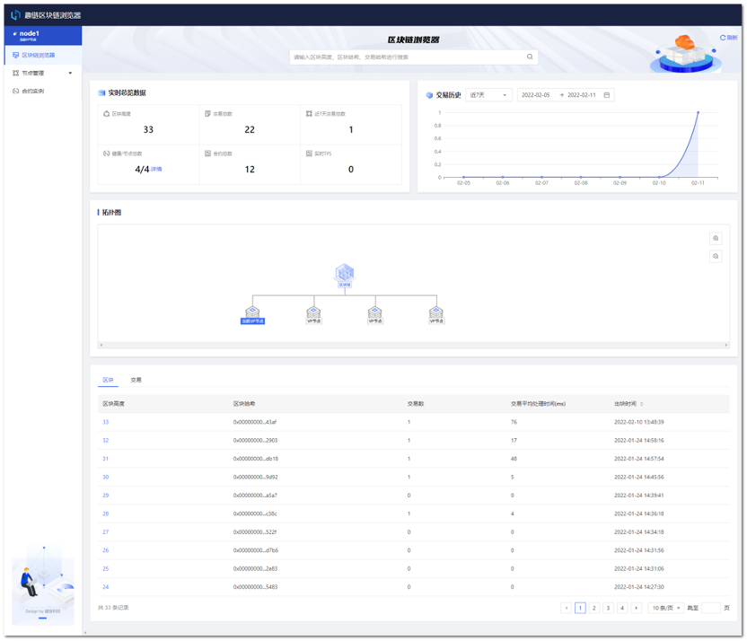
2.2.1 查看区块¶
步骤一： 在搜索框中输入区块高度或区块哈希，或者点击【区块】tab下的【区块高度】，进入区块详情页。
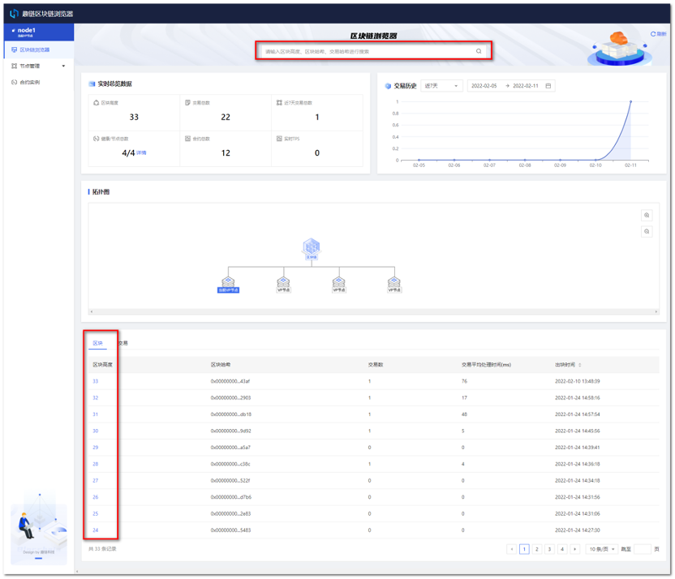
步骤二： 在区块详情页中，可以查看区块详情和该区块下进行的交易，还可以继续搜索想要查看的区块和交易。其中，父区块哈希和交易哈希可以点击跳转至对应详情页，区块哈希、父区块哈希、Merkle树的根哈希可复制。
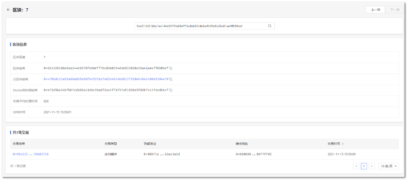
2.2.2 查看交易¶
步骤一： 在搜索框中输入交易哈希，或者点击【交易】tab下的【交易哈希】，进入交易详情页。
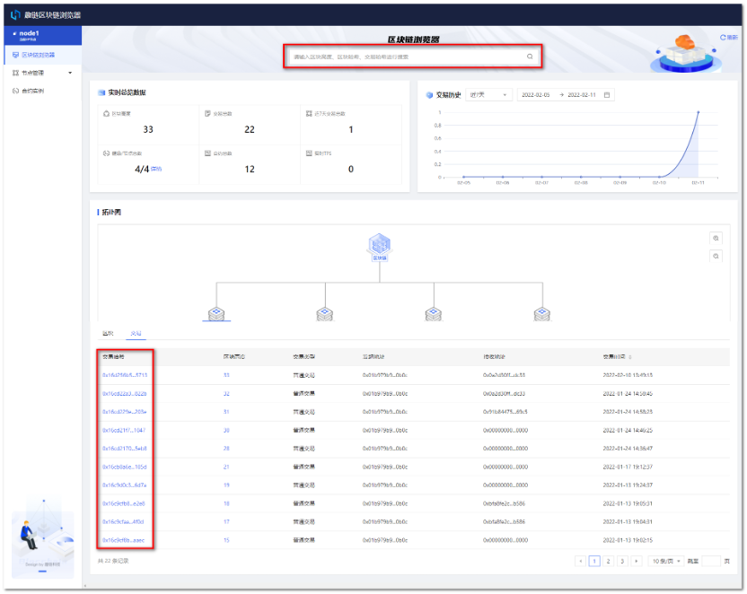
步骤二： 在交易详情页中，可以查看交易详情，还可以继续搜索想要查看的区块和交易。其中，区块哈希可以点击跳转至对应详情页，交易哈希、区块哈希、发起地址、接收地址可复制。
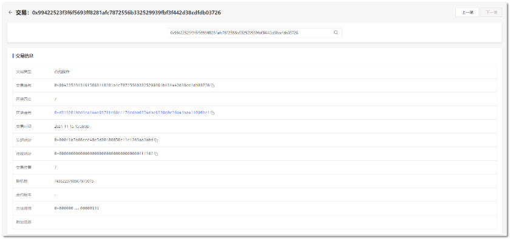
2.3 节点管理-节点信息¶
趣链区块链浏览器提供【节点信息】和【节点配置】两个可视化的节点管理页面。下文将介绍【节点信息】的使用说明，【节点配置】请参考2.4节内容。
2.3.2 节点连接状态管理¶
建立节点连接
步骤一： 点击【节点管理】下【节点信息】，进入节点信息页面。
步骤二： 在节点信息页面中，可以看到节点关联列表，点击【建立节点连接】。
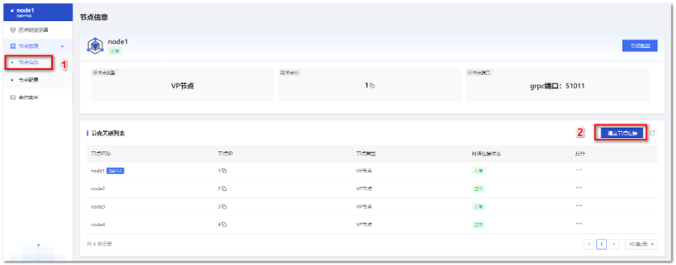
步骤三： 在弹窗中填写待与当前节点关联的新节点参数，点击【确定】开始建立连接。
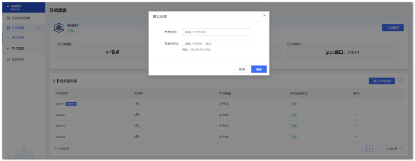
参数说明如下：
节点名称 ：新节点的节点名称，不可与当前节点关联列表的节点名称相同；
节点IP地址 ：新节点的端口信息，系统检验可连接后，即可建立新节点与当前节点的网络连接。
步骤四： 连接成功后，可在节点关联列表中查看。
重新连接节点
步骤一： 点击【节点管理】下【节点信息】，进入节点信息页面。
步骤二： 在节点信息页面中，可以看到节点关联列表，选择与当前节点建立连接的其他节点，点击【…】操作列的【重新连接】。
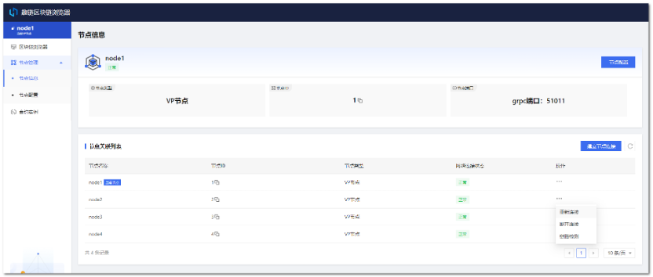
步骤三： 在弹窗内，点击“确定”，即可重新建立所选节点与当前节点之间的连接。
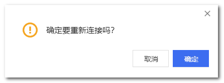
断开节点连接
步骤一： 点击【节点管理】下【节点信息】，进入节点信息页面。
步骤二： 在节点信息页面中，可以看到节点关联列表，选择与当前节点建立连接的其他节点，点击【…】操作列的【断开连接】。

步骤三： 在弹窗内，点击“确定”，即可断开所选节点与当前节点之间的连接，断开连接后该所选的节点将会从关联节点列表中消失，请谨慎操作。
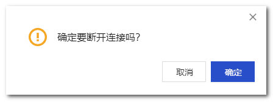
节点链路检测
步骤一： 点击【节点管理】下【节点信息】，进入节点信息页面。
步骤二： 在节点信息页面中，可以看到节点关联列表，选择与当前节点建立连接的其他节点，点击【…】操作列的【链路检测】。

步骤三： 在弹窗内，您可以查看到链路检测结果。
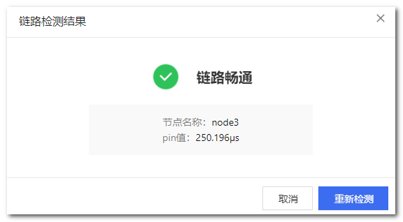
2.4 节点管理-节点配置¶
2.4.1 节点网络配置¶
节点网络配置是针对节点Domain配置，支持新增Domain和修改Domain操作。
新增Domain
步骤一： 点击【节点配置】中【网络配置】，进入网络配置页面。
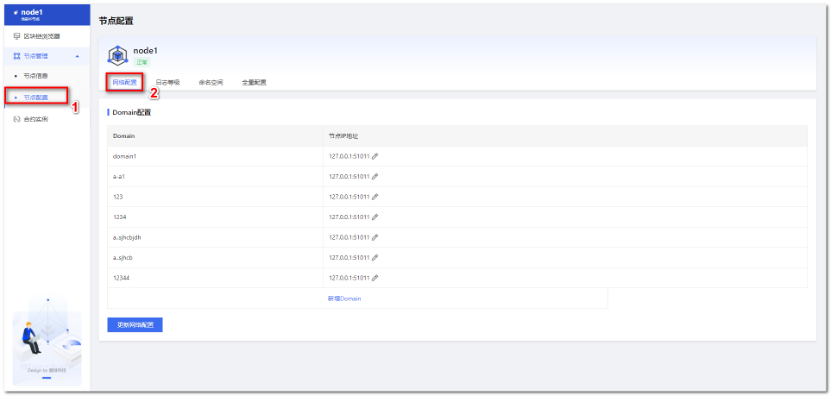
步骤二： 点击【新增Domain】，在新增行中，填写Domain参数，点击【保存】。
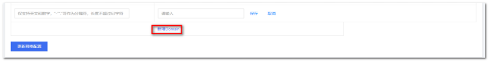
步骤三： 保存后，点击【更新网络配置】，网络配置更新成功。
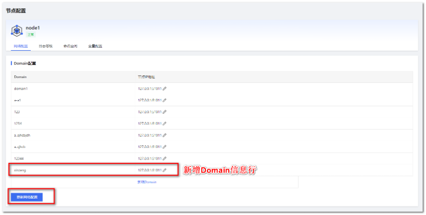
修改Domain
步骤一： 点击【节点配置】中【网络配置】tab，进入网络配置页面。
步骤二： 选择列表中某个Domain，点击【修改】。在修改框中，重新填写Domain参数，点击【保存】。
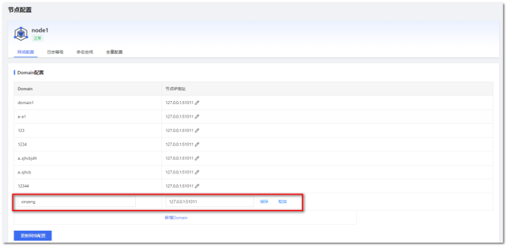
步骤三： 保存后，点击【更新网络配置】，网络配置更新成功。
2.4.2 节点日志等级配置¶
查看当前日志等级
步骤一： 点击【节点配置】中，【日志等级】tab，进入日志等级配置页面。
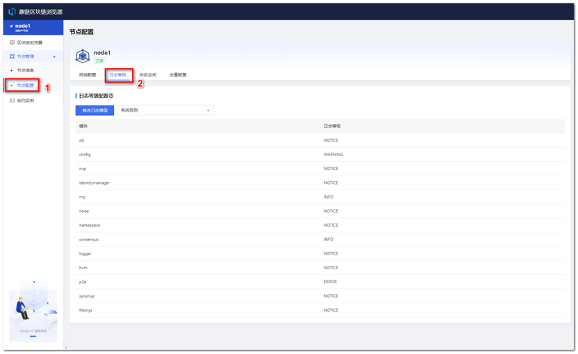
步骤二： 在选择框中，选择系统级别或Namespace级别的日志等级，查看不同模块下日志等级配置。
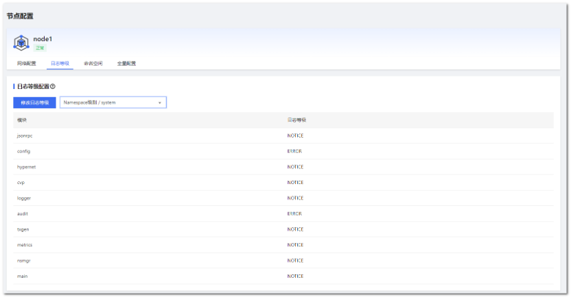
修改日志等级配置
步骤一： 点击【节点配置】中，【日志等级】tab，进入日志等级配置页面。
步骤二： 点击【修改日志等级】，在弹窗中填写修改参数，点击【确定】，可修改日志等级。
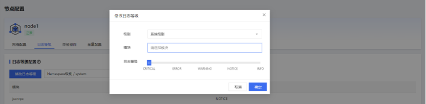
每个分区模块的日志级别，日志级别由高到低为CRITICAL/ ERROR/WARNING/NOTICE INFO，级别越低日志内容越详细，对系统性能影响越大。
2.4.3 节点命名空间配置¶
节点命名空间配置提供可视化的 命名空间启动或停止 操作。
步骤一： 点击【节点配置】中，【命名空间】tab，进入命名空间配置页面。
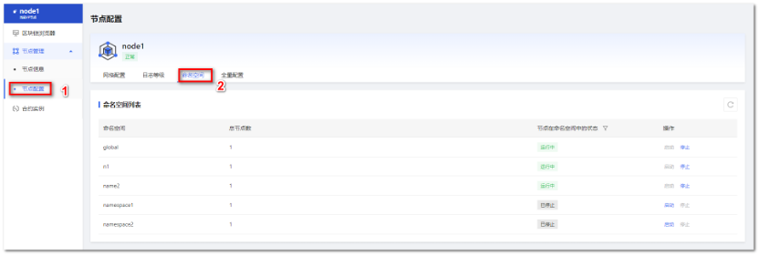
步骤二： 选择某个命名空间，点击【启动】/【停止】按钮。
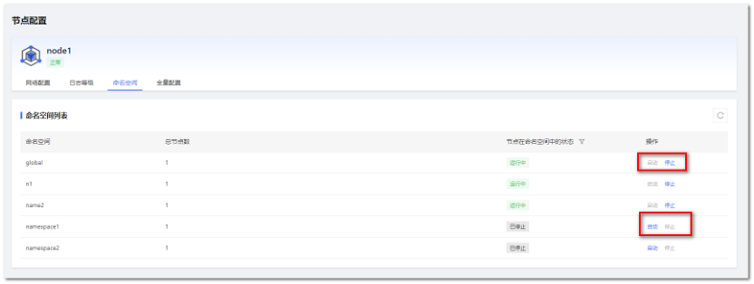
步骤三： 该节点会启动/停止在命名空间中的运行。
2.4.4 节点全量配置¶
步骤一： 点击【节点配置】中，【全量配置】tab，进入全量配置界面。
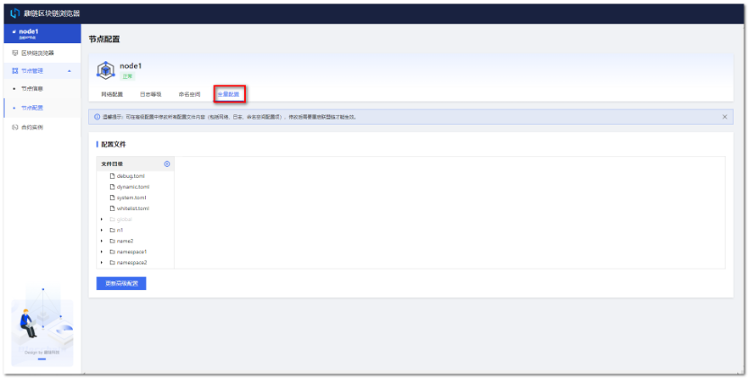
步骤二： 在左侧文件目录下，选择文件，进入编辑框修改配置。
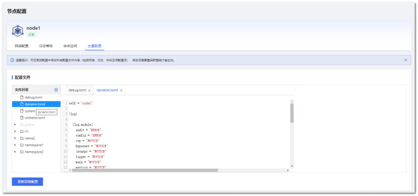
步骤三： 修改完成后，点击【更新高级配置】，链将重启并完成配置更新。
2.5 合约实例¶
本模块提供对合约实例的管理操作。目前，支持Solidity合约实例和Java合约实例管理。
2.5.1 部署合约实例¶
前置条件：
已编写完成的合约文件，并有编译文件；
准备私钥文件（用于当前账户部署的合约实例的操作授权）；
当前节点连接正常；
联盟链正常运行。
操作步骤：
点击【合约实例】tab，进入合约实例页面；
点击【上传私钥】，上传合约部署、升级等操作时需要使用的私钥，点击【确定】；
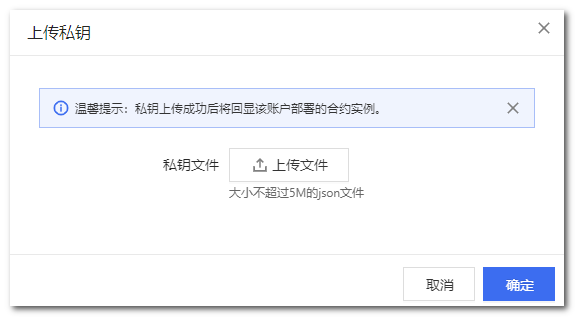
私钥上传完成后，点击【部署合约实例】，在弹窗中填写部署参数，点击【确定】，开始部署合约；
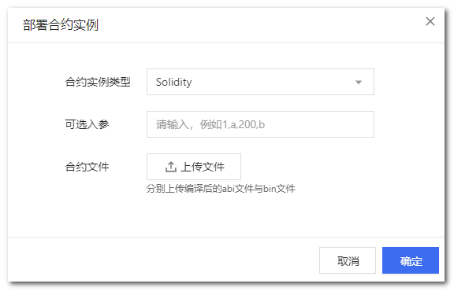
参数说明：
合约实例类型： 支持Solidity和Java两种合约类型
可选入参： 部署合约实例的初始化参数，如没有可不填
合约文件： 对于Solidity合约需分别上传编译后的abi文件和bin文件；对于Java合约需分别上传编译后的abi文件和jar文件
部署成功后，合约实例列表中将自动更新该合约实例，其状态为【运行中】。
2.5.2 查看合约实例¶
前置条件 ：合约已完成部署。
操作步骤 ：
点击【合约实例】tab，进入合约实例页面；
选择目标合约实例，点击【查看】，可进入合约实例详情页；
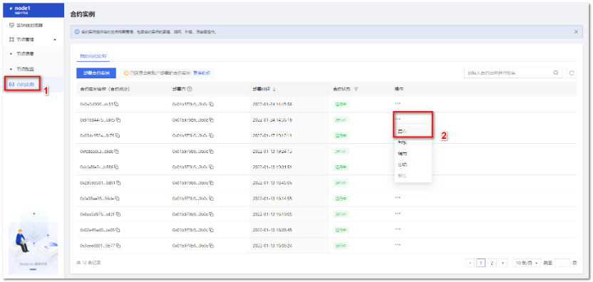
如下所示，在详情页可查看合约实例地址、合约类型、部署地址、合约调用记录等。
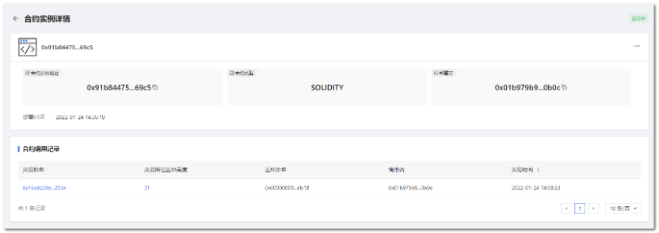
2.5.3 调用合约实例¶
前置条件 ：
在合约实例列表中，已有合约实例，且状态为【运行中】；
联盟链处于正常运行状态。
操作步骤 ：
点击【合约实例】tab，进入合约实例页面；
选择某个合约实例，点击【调用】；
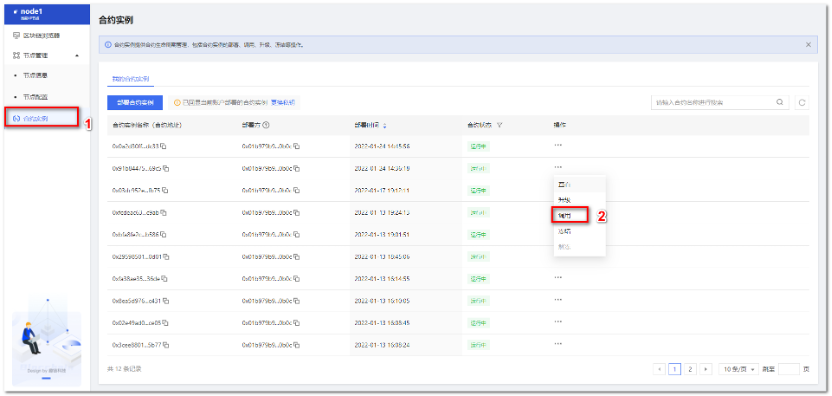
弹窗中，填写调用参数，点击【确定】。
Solidity合约调用参数说明
参数名 |
填写说明 |
|---|---|
函数名 |
该合约实例的调用函数名 |
可选入参 |
该合约的调用参数，如没有可不填 |
合约文件 |
该合约编译后的abi文件 |
Solidity合约调用示例
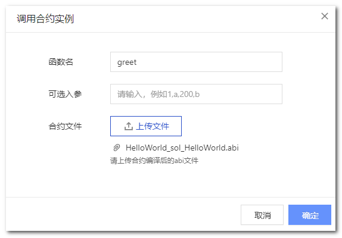
Java 合约调用参数说明
参数名 |
填写说明 |
|---|---|
BeanName |
该合约实例的调用方法名 |
可选入参 |
该合约的调用参数，如没有可不填 |
合约文件 |
该合约编译后的abi文件 |
Java合约调用示例
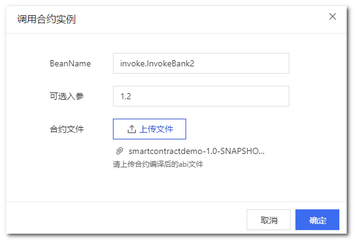
调用成功，会跳出调用结果的详情弹窗，可查看调用信息，点击蓝色字符串【交易哈希】，可进行跳转至对应的区块链浏览器交易详情页，或者您也可在合约详情中查看调用记录。
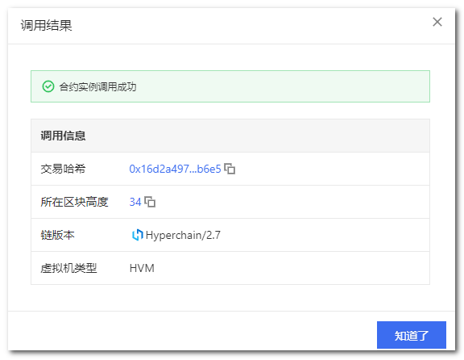
2.5.4 升级合约实例¶
前置条件：
在合约实例列表中，已有合约实例，且状态为【运行中】；
链处于正常运行状态。
操作步骤 ：
点击【合约实例】tab，进入合约实例页面；
选择目标合约实例，点击【升级】；
弹窗中填写升级参数，点击【确定】，合约开始升级；
Solidity合约升级参数说明
参数名 |
填写说明 |
|---|---|
可选入参 |
该合约的调用参数，如没有可不填 |
合约文件 |
分别上传该合约编译后的abi文件与bin文件 |
Java 合约升级参数说明
参数名 |
填写说明 |
|---|---|
可选入参 |
该合约的调用参数，如没有可不填 |
合约文件 |
分别上传该合约编译后的abi文件与bin文件 |
升级成功后，列表将自动刷新，且在合约实例详情中将新增相应的升级记录信息。
2.5.5 冻结合约实例¶
由于区块链网络中，数据一旦上链就不可篡改，那么对于合约也一样，一旦部署上链就不可以被删除。但是，会出现用户不需要使用合约或合约出现问题需要暂停使用的情况，针对这一问题，平台提供了合约冻结功能，可以暂停合约的使用。
前置条件 :
在合约实例列表中，已有合约实例，且状态为【运行中】；
链处于正常运行状态。
操作步骤 ：
点击【合约实例】tab，进入合约实例页面；
选择某个合约实例，点击【冻结】；
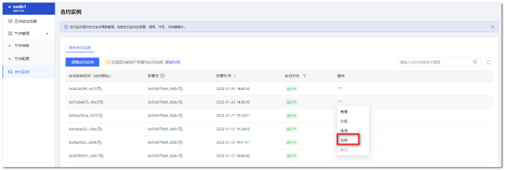
冻结成功后，列表将自动刷新，合约状态更新为【已冻结】。
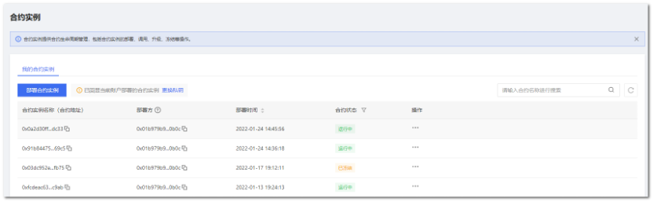
2.5.6 解冻合约实例¶
前置条件 ：
在合约实例列表中，已有合约实例，且状态为【已冻结】；
联盟链处于正常运行状态。
操作步骤 ：
点击【合约实例】tab，进入合约实例页面；
选择某个【已冻结】的合约实例，点击【解冻】；
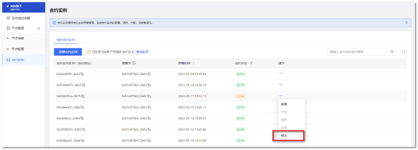
在弹窗中点击确定；
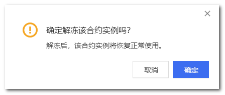
解冻成功后，列表将自动更新，合约状态更新为【运行中】。
3. 注意事项¶
区块链浏览器为节点级别功能，目前监控功能仅针对global分区，后续版本将完善
cvp节点暂不支持区块链浏览器开启
区块链浏览器相关日志保存在节点目录下的baas/logs
当前版本暂不支持部署java合约